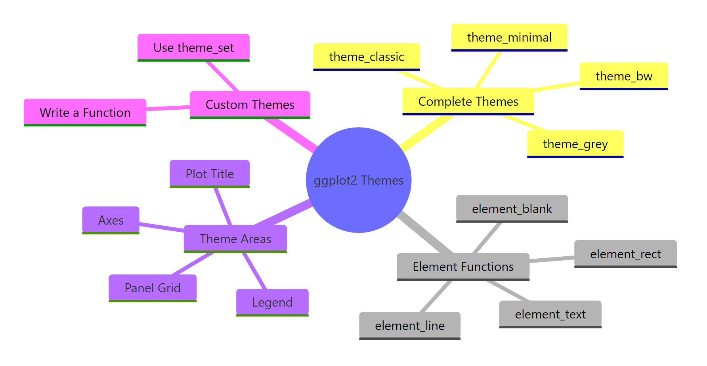
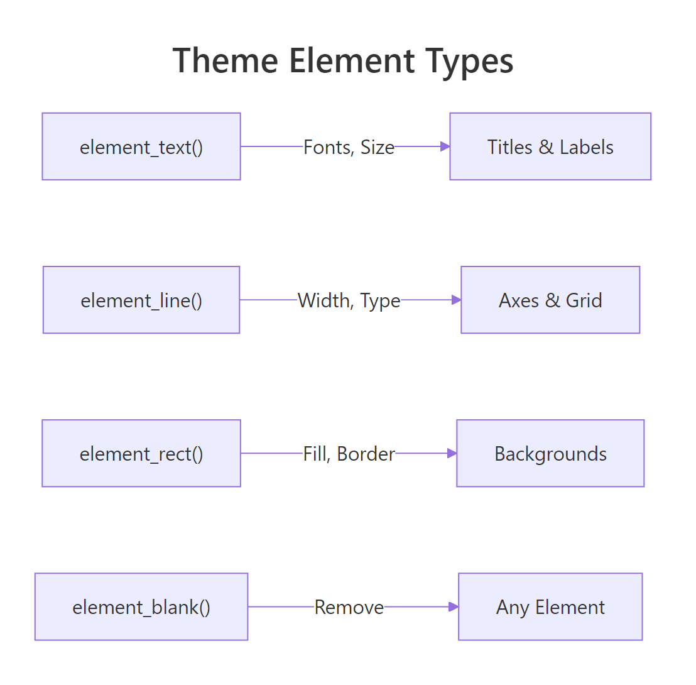
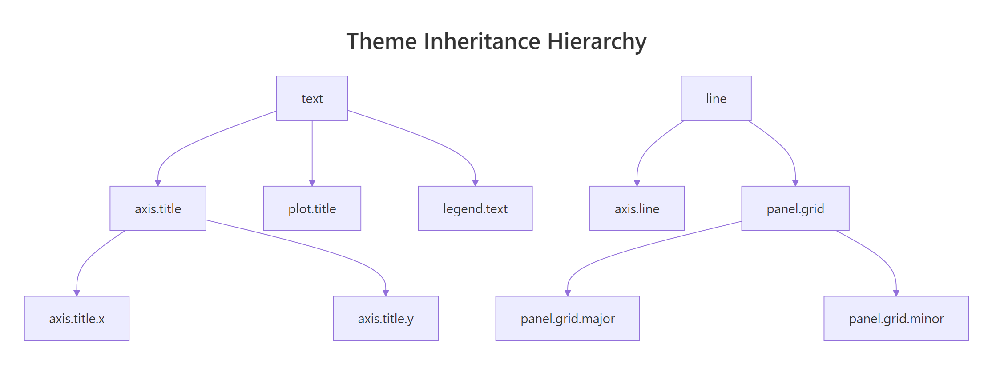

ggplot2 Themes: From theme_classic to Your Own Custom House Style
Themes control every non-data element of a ggplot2 chart, fonts, grid lines, backgrounds, and legend position, letting you go from the grey default to a polished, publication-ready style in one line of code.
Introduction
Every ggplot2 user eventually types + theme_minimal() and watches their plot transform. The grey background vanishes, the grid lines soften, and the chart suddenly looks professional. Most people stop there, but themes can do far more.
A theme is ggplot2's styling layer. It controls everything you see that is NOT your data: title fonts, axis labels, grid line thickness, background colour, legend placement, and facet strip styling. The data layer (geoms, scales, coordinates) tells ggplot2 what to draw. The theme layer tells it how everything around the data should look.
Why does this matter? Because consistent, clean styling is the difference between a plot that communicates and one that distracts. If you build reports or dashboards, a reusable custom theme saves hours of repetitive formatting. If you publish research, a clean theme meets journal standards without manual tweaking.
In this tutorial, you will master all 8 built-in themes and the 4 element functions that control every visual property. You'll also learn the inheritance system and build your own reusable theme function. Every code block is live, click Run to execute directly in your browser.

Figure 1: The four pillars of the ggplot2 theme system.
What are the built-in ggplot2 themes?
ggplot2 ships with 8 complete themes. Each one is a pre-built collection of theme() settings that override every visual element at once. Think of them as ready-made style sheets, you add one to any plot and the entire look changes.
Let's create a base plot first, then cycle through all 8 themes. We'll use mtcars so the data stays familiar.
This is theme_grey(), the default. The grey background with white grid lines was Hadley Wickham's deliberate design choice: it puts the data in the foreground while the grid recedes. Now let's compare all 8 themes.
Each theme is a complete replacement. When you add theme_bw(), it overrides every setting from theme_grey(). You then layer your own theme() tweaks on top.
Try it: Take p_base and apply theme_classic() instead of the default. Then add a subtitle "No grid lines, just clean axes" using labs().
Click to reveal solution
Explanation: theme_classic() removes all grid lines and the background, leaving only the x and y axis lines. The labs() call updates the subtitle.
How does theme() modify individual plot elements?
Complete themes are all-or-nothing. The theme() function gives you surgical control, you target one element at a time. Each argument in theme() maps to a specific visual piece of the plot, and you set its appearance using one of four element_*() functions.

Figure 2: Each element function controls a different visual type.
Let's start by customising the plot title. The argument is plot.title, and because titles are text, we use element_text().
The title jumps out now, 18pt, bold, navy. Every other element stays exactly as theme_minimal() set it. That's the power of theme(): it layers on top of whatever complete theme you start from.
Now let's remove the grid lines entirely. The argument is panel.grid, and to remove any element, you use element_blank().
The plot area is now completely clean. Only the data points and axis labels remain. You can also target just the minor grid while keeping the major lines.
element_text(), lines use element_line(), backgrounds use element_rect(), and element_blank() removes anything. Once you know which type an element is, you know which function to use.Try it: Start from theme_bw() and change the axis title font size to 14pt using element_text(). The argument name is axis.title.
Click to reveal solution
Explanation: axis.title controls both x and y axis titles. Setting size = 14 in element_text() increases them from the default (~11pt).
What are the four element functions?
Every visual property in a ggplot2 theme is set through one of four functions. Let's explore each one in detail.
element_text()
element_text() controls any text on the plot: titles, axis labels, legend text, facet strip labels. Its most useful arguments are family (font), face ("plain", "bold", "italic", "bold.italic"), size (points), colour, angle, and hjust/vjust (alignment from 0 to 1).
The margin() function adds spacing around text. The b = 10 pushes the subtitle 10 points away from the content below it. The angle = 45 rotates x-axis tick labels, and hjust = 1 right-aligns them so they don't overlap.
element_line()
element_line() controls axis lines, grid lines, and tick marks. Its key arguments are colour, linewidth (in mm), and linetype ("solid", "dashed", "dotted", "longdash").
This is a common pattern: add clear axis lines, soften the major grid to dashed lines, and remove minor grid lines entirely. The result is cleaner than the default without losing all spatial reference.
element_rect()
element_rect() controls rectangular areas: the plot background, the panel background (the data area), and the legend background. Its arguments are fill (interior colour), colour (border colour), and linewidth.
Setting colour = NA on plot.background removes the outer border while keeping the fill. The panel gets a subtle grey border to frame the data area.
fill = NA or colour = NA inside element_rect(). Using element_blank() on panel.background collapses the background entirely.Try it: Use element_rect() to give plot.background a light yellow fill ("#fffde7") while keeping the panel white.
Click to reveal solution
Explanation: plot.background controls the entire plot area. panel.background controls just the data region. Setting both lets you create a two-tone effect.
How does theme inheritance work?
Theme elements form a hierarchy. At the top sit three root elements: text, line, and rect. Every specific element inherits from one of these roots, possibly through intermediate parents.

Figure 3: Theme elements inherit from parent elements, set once at the top, override where needed.
This means you can set a global default at the top and only override the specifics that differ. For example, setting text = element_text(family = "serif") changes every piece of text on the plot in one line. That includes the title, subtitle, axis labels, legend text, and facet strip labels.
Notice what happened. plot.title inherited the colour = "grey20" from text but overrode size and face. The x-axis title overrode colour but inherited size = 12 from text. This is how inheritance keeps your code short, you set the base once and override only what differs.
text element and only customize the exceptions. This is the same principle as CSS inheritance on the web.Try it: Set all text to size 12 using the root text element, then override plot.title to size 18 and bold. Keep everything else at the inherited default.
Click to reveal solution
Explanation: The text root element sets the default for everything. plot.title inherits from text but overrides size and face. All other text elements (axis labels, legend, etc.) stay at 12pt.
How do you control legend position and appearance?
The legend is one of the most frequently customised theme elements. ggplot2 gives you control over where it sits, how it looks, and whether it appears at all.
The legend.position argument accepts five string values: "right" (default), "left", "top", "bottom", and "none" (hides it). You can also pass a numeric vector c(x, y) to place the legend inside the plot area.
Placing the legend at the bottom works well for wide plots and dashboards. Removing the legend background (fill = NA) and key fill makes it blend cleanly into the plot.
For more precise placement, you can position the legend inside the plot area. The coordinates are relative: c(0, 0) is bottom-left, c(1, 1) is top-right.
The legend.justification argument controls which corner of the legend box aligns to the position coordinates. Setting it to c(1, 1) means the top-right corner of the legend sits at the specified position.
guides(colour = "none", size = "none") when you want every legend gone, useful for faceted plots where the facet labels carry the information.Try it: Move the legend to the top of the plot using legend.position.
Click to reveal solution
Explanation: legend.position = "top" moves the legend above the plot. ggplot2 automatically arranges the keys horizontally when the legend is at the top or bottom.
How do you build a reusable custom theme function?
Once you've settled on a look, maybe for your organisation, your thesis, or your blog, you don't want to copy-paste 15 lines of theme() every time. The solution is to wrap your settings in a function.
The pattern is simple: create a function that returns the result of a complete theme plus your theme() overrides. Accept a base_size argument so users can scale everything up or down.
This function produces a clean, professional look with bold titles, subtle grid lines, and the legend at the bottom. The base_size argument scales the entire theme proportionally because theme_minimal(base_size) sets the root text size.
Now let's apply it.
One line changes the entire appearance. Anyone on your team can use theme_corporate() without knowing the underlying details.
To make it the default for every plot in your session, use theme_set().
Call theme_set(theme_grey()) to reset to the default when you're done.
+ operator merges your settings with the base, keeping any properties you didn't specify. The %+replace% operator replaces the entire element, setting unspecified properties to NULL. Use %+replace% when you want total control and + when you want to inherit defaults.Try it: Add a base_size argument to the following skeleton and make the title scale to 1.4 times the base size.
Click to reveal solution
Explanation: Multiplying base_size * 1.4 makes the title proportionally larger regardless of the base. When base_size = 16, the title is 22.4pt. When base_size = 12, it's 16.8pt.
Common Mistakes and How to Fix Them
Mistake 1: Putting theme() before the complete theme
❌ Wrong:
Why it is wrong: Complete themes like theme_minimal() replace ALL theme settings. Your theme() call gets wiped out because theme_minimal() runs after it.
✅ Correct:
Mistake 2: Using element_blank() when you want transparent
❌ Wrong:
Why it is wrong: element_blank() removes the element entirely, including the space it occupied. This can cause layout shifts.
✅ Correct:
Mistake 3: Forgetting that later theme() calls override earlier ones
❌ Wrong:
Why it is wrong: Each theme() call replaces the element you name, it doesn't merge with the previous call. The second call sets colour = "red" but drops the size = 14.
✅ Correct:
Mistake 4: Placing legend inside the plot without setting justification
❌ Wrong:
Why it is wrong: Without legend.justification, the center of the legend aligns to c(0.9, 0.9), pushing half the legend outside the visible area.
✅ Correct:
Practice Exercises
Exercise 1: Style a complete plot with theme tweaks
Create a scatter plot of mpg vs hp from mtcars, coloured by gear. Start from theme_bw(). Customise: bold 16pt title, 12pt axis titles, legend at the bottom, no minor grid lines. Save to my_styled.
Click to reveal solution
Explanation: theme_bw() provides the white background and border. The theme() call layers custom title sizing, axis title sizing, legend position, and removes minor grid lines.
Exercise 2: Build a custom dashboard theme
Write a function theme_dashboard() that starts from theme_light() and accepts base_size. It should remove minor grid lines, use dashed grey90 major grid, scale the title to 1.5x base (bold), place the legend at bottom, and set a white background. Apply it to two plots.
Click to reveal solution
Explanation: Both plots share the same visual identity because they use the same theme function. Changing base_size scales everything proportionally.
Exercise 3: Recreate a plot style from scratch
Start from theme_void() (which strips everything). Add back only: x and y axis lines (black, 0.5mm), axis text (size 10), a bold 16pt title, and dashed horizontal grid lines (grey85). Apply to a bar chart of cyl counts from mtcars.
Click to reveal solution
Explanation: Starting from theme_void() means nothing is drawn. You selectively add back only the elements you want. This gives you maximum control over which visual elements appear.
Putting It All Together
Let's build a complete publication-quality plot from start to finish. We'll create a custom theme, apply it, and customise the data layer too.
This plot is ready for a report, presentation, or journal submission. The custom theme handles all the styling. The data layer handles the visual encoding. Clean separation.
Summary
Here is a reference table of the most useful theme() arguments grouped by area.
| Area | Argument | element_*() | Controls |
|---|---|---|---|
| Title | plot.title |
element_text() |
Main title font, size, colour |
| Title | plot.subtitle |
element_text() |
Subtitle styling |
| Title | plot.caption |
element_text() |
Caption (bottom annotation) |
| Axes | axis.title |
element_text() |
Both axis title labels |
| Axes | axis.text |
element_text() |
Tick label text |
| Axes | axis.line |
element_line() |
Axis lines |
| Axes | axis.ticks |
element_line() |
Tick marks |
| Grid | panel.grid.major |
element_line() |
Major grid lines |
| Grid | panel.grid.minor |
element_line() |
Minor grid lines |
| Panel | panel.background |
element_rect() |
Data area background |
| Panel | panel.border |
element_rect() |
Panel border |
| Legend | legend.position |
string or c(x,y) | Where the legend sits |
| Legend | legend.title |
element_text() |
Legend title styling |
| Legend | legend.background |
element_rect() |
Legend box background |
| Plot | plot.background |
element_rect() |
Outer plot background |
| Plot | plot.margin |
margin() |
Space around the plot |
Key takeaways:
- 8 built-in themes give you instant style,
theme_minimal()andtheme_classic()are the most popular starting points - theme() layers surgical tweaks on top of any complete theme
- 4 element functions control everything:
element_text(),element_line(),element_rect(),element_blank() - Inheritance lets you set global defaults at the root (
text,line,rect) and override specifics - Custom theme functions wrap your styling into reusable, shareable one-liners
- theme_set() applies your custom theme to every plot in a session
FAQ
What is the difference between theme_grey() and theme_gray()?
Nothing. They are aliases. theme_grey() uses British spelling and theme_gray() uses American spelling. Both call the same function and produce identical output.
Can I combine multiple complete themes?
No. Each complete theme replaces all settings from the previous one. If you write theme_bw() + theme_minimal(), only theme_minimal() takes effect. Use one complete theme as your base and layer theme() tweaks on top.
How do I save my custom theme for use across projects?
Put your theme function in an R script (e.g., theme_corporate.R) and source() it at the top of each project. For team-wide use, wrap it in an R package with usethis::create_package(), then anyone can load it with library(yourpackage).
How do I change the font family in ggplot2?
Set family = "your font" inside element_text(). Built-in families include "sans" (default), "serif", and "mono". For custom fonts like Google Fonts, load them with the showtext or extrafont package first. Note that custom fonts may not render in all output formats.
What is the difference between theme() and theme_update()?
theme() modifies the theme of a single plot. theme_update() modifies the current default theme globally, it affects all subsequent plots in the session. Use theme_update() when you want to set a session-wide default without writing a custom function. Use theme_set() to replace the default entirely.
References
- Wickham, H., ggplot2: Elegant Graphics for Data Analysis, 3rd Edition. Chapter 17: Themes. Link
- ggplot2 documentation,
theme()reference. Link - ggplot2 documentation, Complete themes (ggtheme). Link
- ggplot2 documentation, Theme elements (element_text, element_line, element_rect). Link
- R for the Rest of Us, Create your own custom ggplot2 theme (2025). Link
- Jumping Rivers, Getting started with theme() (2025). Link
- Mock, T., Creating and using custom ggplot2 themes (2020). Link
- Peng, R., Mastering Software Development in R. Section 4.6: Building a New Theme. Link
Continue Learning
- ggplot2 Tutorial 1 - Intro, covers the foundations of ggplot2 layers, geoms, and aesthetics
- ggplot2 Quickref, a compact reference card for common ggplot2 operations and syntax
Further Reading
- ggplot2 Legends in R: Position, Remove, Rename & Customize Completely
- ggthemes Package in R: Economist, FiveThirtyEight & 20 More Ready-Made Themes
- 25 Best ggplot2 Extensions in R: ggrepel, ggforce, ggtext & Beyond
- ggplot2 Customization Exercises: 10 Theme & Scale Practice Problems, Solved Step-by-Step